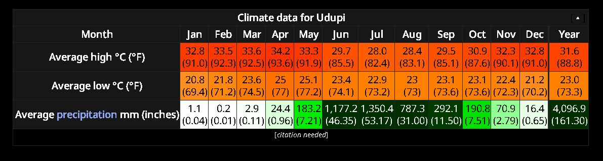

Udupi City in Karnataka, India
History of Udupi.
- In the 13th century, Vaishnavite saint Madhvacharya founded the Sri Krishna Temple. He set up eight mathas - Ashta Mathas in Udupi to propagate the Dvaita Vedanta philosophy, and this caused a vibrant temple culture to take root in present-day Udupi district. Significant migration of Brahmins to the region took place subsequently, and they came to comprise 10 per cent of the region's population, three times higher than elsewhere in South India.
- It is widely believed that the name of Udupi was derived from its Tulu name Odipu.The Tulu name in turn is associated with a temple at Malpe, devoted to Vadabhandeshwara. Another story is that the name Udupi came from the combination of the Sanskrit words Udu and Pa, which mean “stars” and “lord.” According to legend, the moon’s light was once reduced due to a curse by King Daksha, whose 27 daughters (the 27 stars,according to Hindu astrology) were married to the moon. The moon prayed to Lord Shiva to get back its original shine. Lord Shiva was pleased with the moon’s prayer and restored its shine. Legend says that the moon and his wives made their prayer at the Chandramouleeshwara temple at Udupi, creating a linga that can be seen even today. According to this story, therefore, Udupi means the land of the “lord of the stars,” the moon.
- ... One among the triad of "three great Acharyas" was Madhwa born in 1238 A.D. near Udupi (Pajaka Kshethra). He taught the Dwaita doctrine, the doctrine characterised by unqualified dualism and devotion to lord Vishnu. He founded eight pontifical seats at Udupi for the worship of Lord Krishna, whose temple also he erected and is famous as "Udupi Sri Krishna temple". Christianity started to exert its real influence from 17th century onwards, gathering momentum in 19th century. It is said that the earliest Christian settlement appears to have been at Kalyanpur near Udupi, where it is said a Christian Bishop used to reside much earlier. Number of churches were established near Udupi. Prominent among them being the Churches around Kalyanpur, Brahmavar, Shirva and Belman. Perhaps the advent of modern education in this area is attributed to the churches and their activities. The historic name of the district which was "Tuluva" or "Tulunadu" which was changed to South Kanara and then to Dakshina Kannada, now bifurcated into Dakshina Kannada and Udupi districts. The district, like the rest of the territory between Kanyakumari (Cape Comorian) in South, and Thana in Maharashtra, in the north claims its origin with the land reclaimed by Parashurama, one of the ten avatars of Vishnu by throwing a hatchet from the peaks of the western ghats to Arabian sea. Parashurama is said to have brought Brahmins from Aryavartha to settle in this tract. The temple of Renuka on the Kunjaragiri hill near Udupi is believed to have been built in honour of his mother by Parashurama himself.
- According to the inscriptions, the earliest known rulers of this region were the Chutus (Tulus). Between 200 A.D. and 600 A.D. the Kadambas, the Brahmin kings of Banavasi ruled over this tract till they were defeated by the Chalukya king Kirtivarma. But the influence of the Kadambas as feudatory princes under successive dynasties - Chalukyas, Rashtrakutas and Vijayanagar emperors continued for some time. In about 575 A.D. the reign of Western Chalukyas commenced and they appointed the Alupas to rule the region as their feudatories. But the Alupas being powerful asserted their own rights and declared independence. But Pulikeshi II of Western Chalukyas subjugated them. Pallavas ruled the region between 642 A.D .and 653 A.D. after which the country went back to the western Chalukyas, with Alupas as their feudatories till 757 A.D. It is said that Alupas continued to remain the feudatories of the new overlords till 770 A.D. Thereafter for nearly a hundred years till the first quarters of the 10th century A.D., nothing much is known about the history of the Alupas. The headquarters of Alupas from Udyawara to Barakuru (Barkur) has taken place during this period of time. For some time this area was under the Hoysala rule and then under the Vijayanagara rulers. Keladi Nayakas have ruled this area since 1554 A.D. to about 200 years. It was during this period that the fort at Barkur was built by them. In 1763 A.D. Hyder Ali of Srirangapatna conquered this area and established his reign and thereafter his son Tipu Sultan reined till 1799 A.D. After the defeat of Tipu Sultan by the British during 1799 A.D., the district was attached to the Madras province under the British Government, till 1947 when the country got Independence. Thereafter till 1956 it continued in the Madras Province and then became a part of Mysore State when the re-organisation of linguistic states constituted in the country.


Geography and climate
- Udupi has an elevation of 27 m (89 ft) above mean sea level. The climate in Udupi is hot in summers and pleasant in winter. During summers (from March to May) the temperature reaches up to 38 °C (100 °F) and in winters (from December to February) it is usually between 32 and 20 °C (90 and 68 °F). As it is a coastal area, there are a few beaches which are tourist attractions. Kaup beach, Malpe beach are two of the beaches in Udupi.
- Udupi is a small town in the state of Karnataka, which is a part of Udupi district, along with Kundapur and Karkala. Recently, Udupi has emerged as one of the most significant pilgrim and tourist spots in the southern part of India. Udupi is located at 13.33 degrees North Latitude & 74.74 degrees East Longitude. It is surrounded by the Western Ghats in the east and the majestic Arabian Sea in the west. The part of Udupi which is nearer to the sea is a plain, having small hills and paddy fields, coconut gardens, etc. On the contrary, the part which is along the Western Ghats has the forests and hilly areas. The forests become thick in some parts and it is in these parts only, where you can find the sanctuaries. Kundapur and Karakala have things in common – both in appearance and culture – they both are covered with forests and all the greenery making it an attractive hotspot for the naturalists.
- Climate & Rainfall The climate of the district shares the wider climatic pattern of the other West Coast districts of India. It is characterized by excessive humidity(78%) during the greater part of the year. There are four seasons viz., Four wet months of June, July, August and September, when the district encounters strong winds, high humidity, heavy showers and a slight fall in temperature. Two warm and damp months of October and November when south west monsoon is retreating. Three cool months of December, January and February when generally dry conditions prevail and Three hot months of March, April and May which is the period of rising temperature. Climate in the district is generally equable. However, it is colder in the interior than in the coast 
Culture
- Bhuta Kola, Aati kalenja, Karangolu, and Nagaradhane are some cultural traditions of Udupi. The residents celebrate festivals such as Makara Sankranti, Nagara Panchami, Krishna Janmashtami, Ganesh Chaturthi, Navaratri, Deepavali. Folk arts like Yakshagana are also popular. During Krishna Janmashtami, Pili Yesa, a traditional folk dance originated in Udupi is demonstrated on the streets. "Pili Yesa" translates to Tiger.
- Nagaradhane is a form of serpent worship which, along with Bhuta Kola, is one of the unique traditions prevalent in coastal districts of Dakshina Kannada, Udupi and Kasaragod collectively known as Tulu Nadu, practiced by Tuluva community members. Cobras are not just seen as deities, but as an animal species which should be respected, appeased and protected for multiple social, religious and ecological reasons. Būta Kōlā, also referred to as Daiva Kōlā or Daiva Nēmā, is a shamanistic dance performance prevalent among the Hindus of Tulu Nadu and parts of Malenadu of Karnataka and Kasargod in northern Kerala, India. The dance is highly stylized and performed as part of 'Bhootaradhane' or worship of the local deities worshipped by the Tulu speaking population. It has influenced Yakshagana folk theatre. Būta kōlā is closely related to Theyyam of North Malabar region.

Economy
- Udupi is becoming a major town in Karnataka. Udupi is the birthplace of the Syndicate Bank, Corporation Bank and Harsha Retail, the leading retailer of coastal Karnataka. Udupi's economy also consists of agriculture and fishing. Small-scale industries like the cashew industry, and other food industries and milk cooperatives are the most prominent. Recently, Udupi is also making its mark in the real estate industry, greatly influenced by its neighboring spearhead Mangalore.
- The Karnataka government had signed a memorandum of understanding (MoU) with the Cogentrix Light and Power Industry to set up a thermal power plant in the district at Nandikur. However, because of stiff opposition from citizens and environmentalist groups, the project has been temporarily suspended. An attempt by the Nagarjuna Power Corporation to set up a similar plant at nearby Padubidri also met strong opposition. Now, the power plant has been set up, generating 1,200 MW of power under the name of Udupi Power Corporation Limited (UPCL), a subsidiary of Lanco Infra, an Andhra Pradesh-based infrastructure major. Adani Power has taken over from Lanco Infra in 2014 for a sum of Rs 6,000 crores. The opposition, however, continues. Manipal, a suburb of Udupi, is home to the headquarters of Syndicate Bank. It is renowned as an education and medical hub. Kasturba Medical College and MIT (Manipal Institute of Technology) are situated here.
Cuisine
- The term Udupi (also Udipi) is synonymous with vegetarian food now found all over the world.[citation needed] The origin of this cuisine is linked to Krishna Matha (Mutt). Lord Krishna is offered food of different varieties every day, and there are certain restrictions on ingredients during Chaturmasa (a four-month period during the monsoon season). These restrictions coupled with the requirement of variety led to innovation, especially in dishes incorporating seasonal and locally available materials. This cuisine was developed by Shivalli Madhwa Brahmins who cooked food for Lord Krishna, and at Krishna Matha in Udupi, the food is provided free of cost. Restaurants specialised in Udupi cuisine can be seen widely in most metropolitan and large cities around the length and breadth of India.
- Although popular for its vegetarian cuisine, Udupi has its fair share of non-vegetarian dishes that are similar to Mangalorean cuisine. Some of these include Kori Roti, Neer Dosa, Kori Pulimunchi, Chicken Sukka, Fish Curry, Fish Fry and more.
- Conversations about Udupi food are usually limited to idli-sambhar, masala dosas and sheera but this cuisine style is actually much more varied than this. The cuisine takes its name from the city of Udupi in the Tulunadu region. It is focused on whole grains, legumes and locally available, seasonal fruits and vegetables. Many dishes have evolved along with the traditions of chaaturmasa vrata – a season when the consumption of certain food groups is restricted. Now, everyone’s heard of idlis, sambhar, vadas, and dosas, here are a few unique Udupi dishes you should try.

Demographics
- Udupi city is part of the eponymous district in Karnataka, India. As per the census in 2011, Udupi city has 33,987 households and a total population of 144,960, of which 71,614 are males and 73,346 are females. The population of scheduled castes is 8,385 while that of scheduled tribes is 6,774. The city population is growing at a rate of 14.03%. Languages of Udupi (2011) Tulu (47.10%) Kannada (21.95%) Konkani (15.01%) Urdu (6.04%) Marathi (3.42%) Malayalam (2.01%) Tamil (1.07%) Others (3.40%) The most spoken language in Udupi town is Tulu. Kannada and Konkani are also spoken in Udupi town. Dakhini Urdu and Beary are spoken by Muslims in the region.[citation needed]

Made By Karthikeyan From Class 8'B'